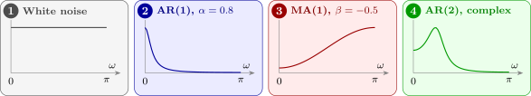

16.1 The spectral density
Definition 16.1.1. For a stationary process with autocovariance \(\gamma (\tau )\) satisfying \(\sum _\tau |\gamma (\tau )| < \infty \), the spectral density is \[ f(\omega ) = \frac {1}{2\pi }\sum _{\tau =-\infty }^{\infty }\gamma (\tau )\,e^{-i\omega \tau } , \qquad -\pi \le \omega \le \pi . \]
- (i)
- \(f(\omega )\) is real and even, and \[ f(\omega ) = \frac {1}{2\pi }\Bigl [\gamma (0) + 2\sum _{\tau =1}^\infty \gamma (\tau )\cos (\omega \tau )\Bigr ] . \]
- (ii)
- The autocovariance is recovered by inversion, \[ \gamma (\tau ) = \int _{-\pi }^{\pi }f(\omega )\,e^{i\omega \tau }\,d\omega , \] and in particular \[ \gamma (0) = \Var (X_t) = \int _{-\pi }^{\pi }f(\omega )\,d\omega . \]
Proof. (i) Since \(\gamma (-\tau ) = \gamma (\tau )\), the terms for \(\tau \) and \(-\tau \) pair up as \(\gamma (\tau )(e^{-i\omega \tau } + e^{i\omega \tau }) = 2\gamma (\tau )\cos (\omega \tau )\), which is real and even in \(\omega \).
(ii) For integers \(m\), \(\int _{-\pi }^{\pi }e^{i\omega m}\,d\omega \) is \(2\pi \) if \(m = 0\) and \(0\) otherwise, since \(e^{i\omega m}\) then completes \(|m|\) whole turns. So \begin {align*} \int _{-\pi }^{\pi }f(\omega )e^{i\omega \tau }\,d\omega &= \frac {1}{2\pi }\sum _k\gamma (k)\int _{-\pi }^{\pi }e^{i\omega (\tau -k)}\,d\omega \\ &= \frac {1}{2\pi }\gamma (\tau )\cdot 2\pi = \gamma (\tau ) , \end {align*}
where exchanging sum and integral is justified by the absolute convergence of \(\sum |\gamma (k)|\). Put \(\tau = 0\) for the variance. □
The last line is the interpretation: the total variance of the series is spread across the frequencies, and \(f(\omega )\,d\omega \) is the share contributed by cycles near frequency \(\omega \). A peak in the spectrum is a frequency band doing a disproportionate amount of the work, which is exactly what a seasonal effect looks like, and it is visible at a glance where the autocorrelation function would show only a slow ripple. Since \(f\) is even, it is usually plotted for \(0 \le \omega \le \pi \) only.
Theorem 16.1.3 (Spectrum of a linear process). If \(X_t = \sum _{j\ge 0}\psi _jZ_{t-j}\) with \(\sum |\psi _j| < \infty \) and \(\{Z_t\}\) white noise with variance \(\sigma _Z^2\), then \[ f_X(\omega ) = \frac {\sigma _Z^2}{2\pi }\bigl |\psi (e^{-i\omega })\bigr |^2 , \qquad \psi (z) = \sum _{j\ge 0}\psi _jz^j . \] In particular, for the ARMA process \(\phi (B)X_t = \theta (B)Z_t\), \[ f_X(\omega ) = \frac {\sigma _Z^2}{2\pi }\,\frac {|\theta (e^{-i\omega })|^2}{|\phi (e^{-i\omega })|^2} . \]
Proof. As for an MA process, \(\gamma (\tau ) = \sigma _Z^2\sum _j\psi _j\psi _{j+\tau }\) (with \(\psi _j = 0\) for \(j < 0\), this holds for all \(\tau \)). Then \begin {align*} \sum _\tau \gamma (\tau )e^{-i\omega \tau } &= \sigma _Z^2\sum _j\sum _\tau \psi _j\psi _{j+\tau }e^{-i\omega (j+\tau )}e^{i\omega j} \\ &= \sigma _Z^2\Bigl (\sum _k\psi _ke^{-i\omega k}\Bigr )\Bigl (\sum _j\psi _je^{i\omega j}\Bigr ) , \end {align*}
with \(k = j + \tau \). The second factor is the complex conjugate of the first, so the product is \(|\psi (e^{-i\omega })|^2\). For an ARMA process \(\psi (B) = \theta (B)/\phi (B)\). □
Example 16.1.4. Find the spectral densities of white noise, the AR(1) process \(X_t = \alpha X_{t-1} + Z_t\), and the MA(1) process \(X_t = Z_t + \beta Z_{t-1}\).
Solution.
White noise
Here \(\gamma (0) = \sigma ^2\) and \(\gamma (\tau ) = 0\) otherwise, so only one term survives: \[ f(\omega ) = \frac {\sigma ^2}{2\pi } , \] constant in \(\omega \). Every frequency contributes equally, which is what the name means, by analogy with white light.
AR(1)
By Theorem 16.1.3 with \(\phi (z) = 1 - \alpha z\), and \(|1 - \alpha e^{-i\omega }|^2 = (1 - \alpha e^{-i\omega })(1 - \alpha e^{i\omega }) = 1 - 2\alpha \cos \omega + \alpha ^2\), \[ f(\omega ) = \frac {\sigma ^2}{2\pi }\cdot \frac {1}{|1 - \alpha e^{-i\omega }|^2} = \frac {\sigma ^2}{2\pi (1 - 2\alpha \cos \omega + \alpha ^2)} . \] (Summing the two geometric series in the definition, with \(\gamma (\tau ) = \sigma ^2\alpha ^{|\tau |}/(1 - \alpha ^2)\), gives the same.) For \(\alpha > 0\) this is largest at \(\omega = 0\): the series is dominated by slow movement, which is what positive autocorrelation means. For \(\alpha < 0\) the peak moves to \(\omega = \pi \), the fastest representable oscillation, alternation from one observation to the next.
MA(1)
With \(\theta (z) = 1 + \beta z\), \(|1 + \beta e^{-i\omega }|^2 = 1 + 2\beta \cos \omega + \beta ^2\), so \[ f(\omega ) = \frac {\sigma ^2}{2\pi }(1 + 2\beta \cos \omega + \beta ^2) , \] a single smooth hump, at \(\omega = 0\) if \(\beta > 0\) and at \(\omega = \pi \) if \(\beta < 0\). Note that \(\beta \) and \(1/\beta \) give spectra of the same shape, as they give the same ac.f. (Section 7).
Example 16.1.5. Find the frequency at which the spectrum of the AR(2) process \(X_t = X_{t-1} - \frac 12X_{t-2} + Z_t\) of Example 8.3.2 is largest, and compare its period with that of the ac.f.
Solution. Here \(\phi (z) = 1 - z + \frac 12z^2\), and \begin {align*} |\phi (e^{-i\omega })|^2 &= \bigl (1 - e^{-i\omega } + \tfrac 12e^{-2i\omega }\bigr )\bigl (1 - e^{i\omega } + \tfrac 12e^{2i\omega }\bigr ) \\ &= 1 + 1 + \tfrac 14 - 2\cos \omega + \cos 2\omega - \cos \omega \\ &= \tfrac 94 - 3\cos \omega + \cos 2\omega . \end {align*}
The spectrum is largest where this is smallest. With \(c = \cos \omega \) and \(\cos 2\omega = 2c^2 - 1\), it is \(2c^2 - 3c + \frac 54\), minimised at \(c = \frac 34\). So the peak is at \(\omega = \arccos 0.75 = 0.723\) radians, a period of \(2\pi /0.723 = 8.7\) observations, where \(|\phi |^2 = 0.125\) and \(f = 8\sigma ^2/(2\pi )\), against \(4\sigma ^2/(2\pi )\) at \(\omega = 0\) and \(0.16\sigma ^2/(2\pi )\) at \(\omega = \pi \). The ac.f. oscillates with period exactly \(8\); the two periods are close but not equal, because the damping of the ac.f. shifts the peak of the spectrum (Figure 14, panel 4).

Questions on this section
Stuck on something here? Ask below and it stays attached to this topic.